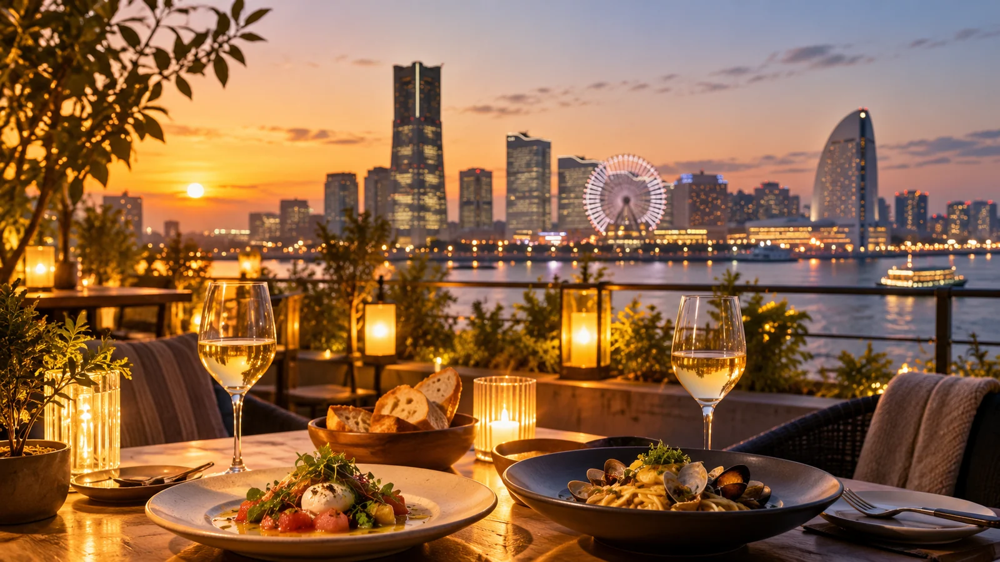
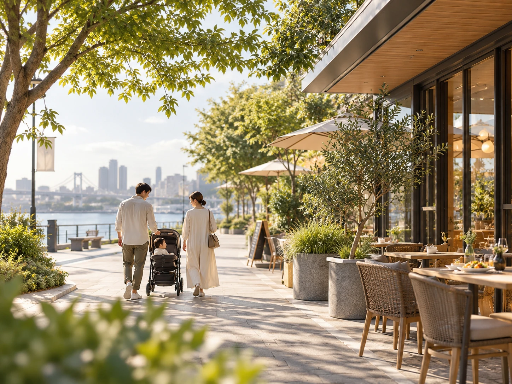

MOOD → DAY
気分で選ぶ、
今日の過ごし方。
予定がなくても大丈夫。
今の気分から、ちょうどいい一日を見つけよう。
気分やりたいこと条件
誰と過ごす？まずは同行者をひとつ
年齢や移動の負担も見ながら、一日の組み立てまで提案します。
気分や、やりたいことを1つ選んでください
STEP 3 条件を少しだけ現在地・時間・天気で調整（任意）
FROMどこから出かける？
出発地は指定なし
または
出発地は指定しなくてもOK。所要時間で絞りたいときだけ、現在地か好きな場所を選べます。関東＋伊豆489スポット。子どもと、パートナーと、ひとりでも。
TODAY'S PLANS
今日のあなたなら、
こんな3つの過ごし方。
WHAT’S ON
今日できることから選ぶ。
舞台も、展覧会も、季節イベントも。今ある体験を、横にめくって探す。
KIBUN MAGAZINE
休日のヒントを読む。
検索する前に、こんな一日もいいかも。場所のまとめではなく、過ごし方から読める小さな特集です。

DINNER OUTSIDE · TOKYO / YOKOHAMAまだ帰りたくない日の、外ごはん。東京・横浜のテラス6選読む →
WITH A ONE-YEAR-OLD · KANTO1歳と、今日はどこまで行ける？ 歩きはじめの親子にうれしい8スポット読む →

RAINY DAY · YOKOHAMA雨の横浜、むしろ出かけたい。室内で過ごす7つの場所読む →
BY THE WATER · KANAGAWA海を見たい日は、それだけでいい。横浜・湘南・横須賀の水辺7選読む →
SCIENCE · TOKYO / KANAGAWA「なんで？」を一緒に楽しむ。大人も面白い科学館7選読む →
TRAINS · PLANES · SHIPS乗りものを見に行く休日。電車・飛行機・船の8スポット読む →
AFTER FIVE · TOKYO / YOKOHAMA日が落ちてから、出かける。17時から始める東京・横浜の夜6選読む →
HOTEL FOR AN AFTERNOON泊まらないホテルステイ。午後だけ非日常に逃げる6つの使い方読む →

FAMILY TABLE · YOKOHAMA子どもは遊ぶ。大人はちゃんと食べる。親子の外食6選読む →

HARVEST · KANTO手ぶらで、季節を取りに行く。関東近郊の収穫体験5選読む →
STAY OUTSIDE · KANTO外で眠る。でも、頑張りすぎない。読む →
MAKE / WATCH / TRY
今日は、何かして帰ろう。
観る、描く、こねる、直す、香りをつくる。場所を消費するだけじゃない休日を集めました。
NOW ON KIBUN
いま、気になる。
季節、新しさ、写真の空気感。いま行きたい理由がある場所を。
※ 季節や新しさに合わせて、いま気になる場所を選んでいます。SNSの順位表ではありません。
MOOD COLLECTIONS
こんな日、あるよね。
※ 一部の施設画像は、雰囲気を伝えるためのイメージです。